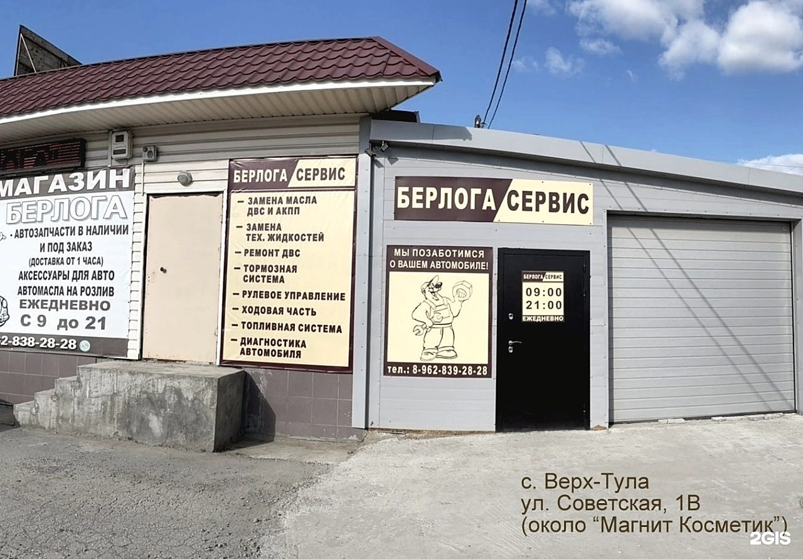
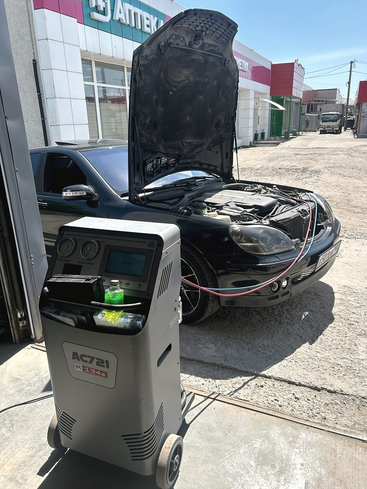
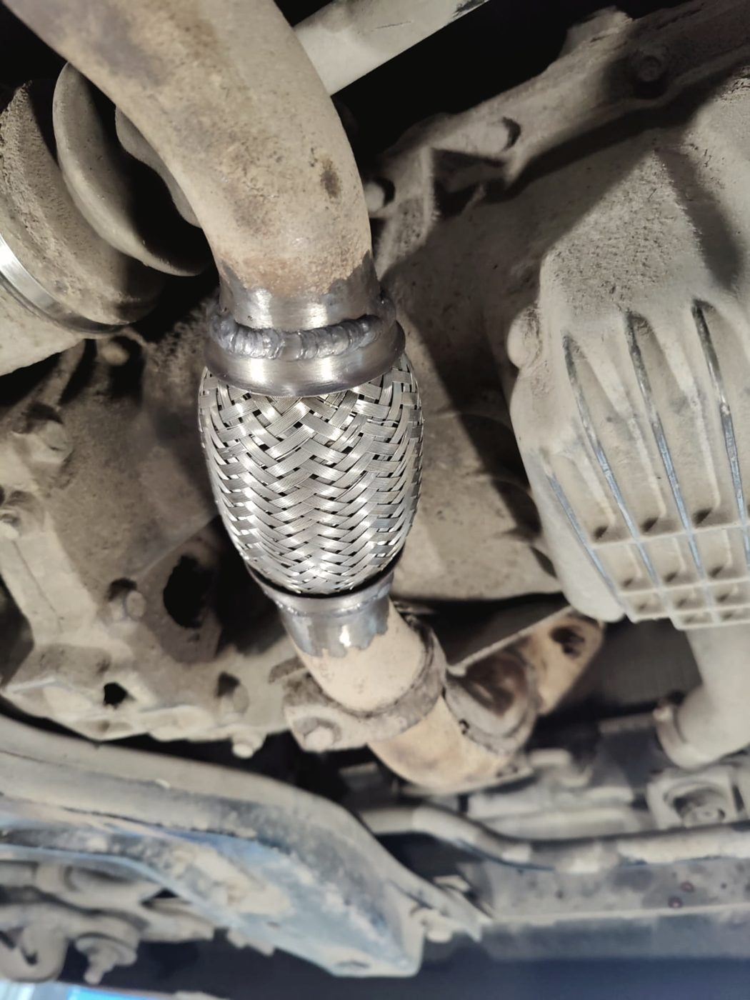
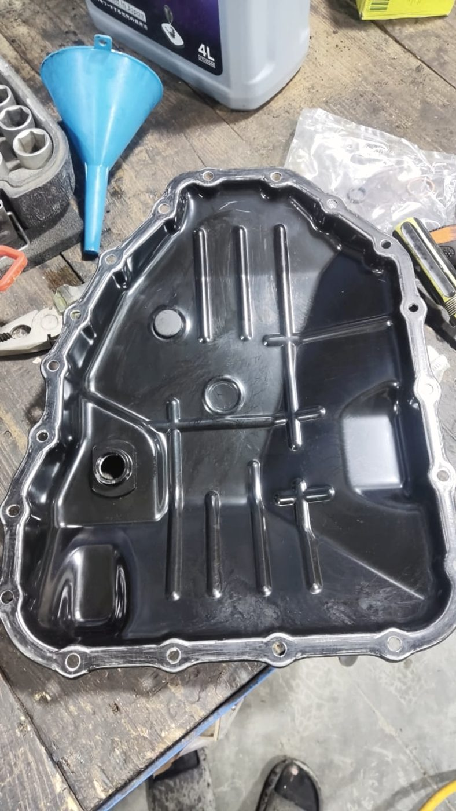
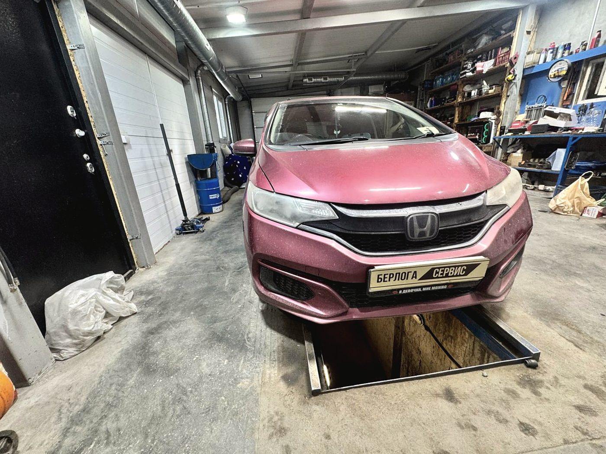
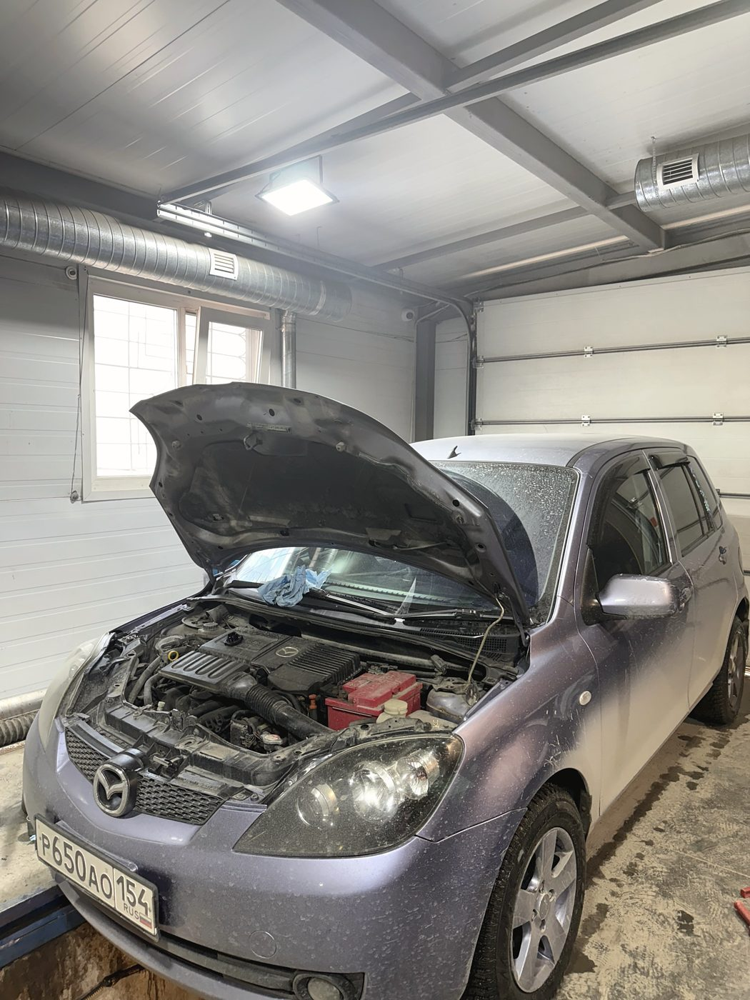
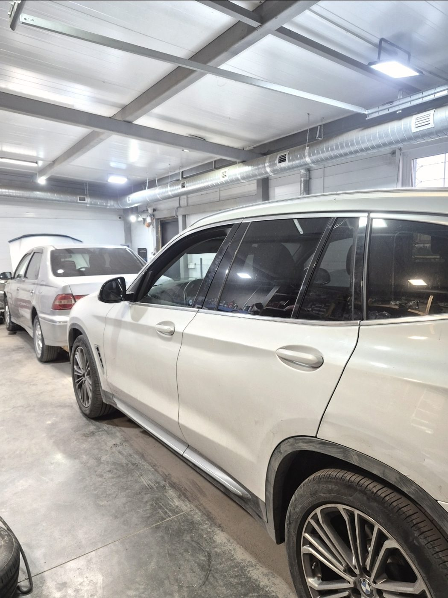

СТО и автозапчасти · Советская, 1в · село Верх-Тула
Сначала находим причину.
Потом чиним
Звучит очевидно, но именно на этом чаще всего экономят. Мы делаем диагностику до работы, а не вместо неё — и поэтому за 101 отзыв у нас нет ни одной оценки ниже пяти.

Порядок работы
Заправка кондиционера:
на трассе и здесь
Самый показательный пример. Услуга одна и та же, цена похожая — а разница в том, сколько шагов пропущено. Через месяц она становится очень заметной.
- Подключают шланги.
- Заправляют хладагент «сколько влезет».
- Берут деньги и отправляют в добрый путь.
- Через месяц снова тепло: утечку никто не искал.
- Полная диагностика системы: где и сколько уходит.
- Замена уплотнительных колец — чаще всего утечка именно там.
- Аппаратная заправка с точной дозировкой хладагента.
- Корректировка количества масла в системе — без этого компрессор живёт недолго.
Про пятёрку
Откуда берётся 5,0
Ровная пятёрка при сотне отзывов не бывает случайной. Обычно за ней стоит одна привычка: не назначать дорогой ремонт, пока не проверено дешёвое.
Женщина приехала с противным шумом в колесе. В другом сервисе сказали менять колодки — а оказался загнутый защитный кожух тормозного диска. Мастер осмотрел, выявил и был предельно честен.
«Всё покажет и расскажет» — это про мастера Александра, и это общее правило: машину смотрят вместе с владельцем, а не за закрытыми воротами.
Работы
Что делаем
Компьютерная диагностика
Ошибки и проверка по факту. Диагноз называем, когда он подтверждён руками.
Ходовая часть
Стойки, рычаги, ступицы, сайлентблоки. Сначала ищем источник шума, потом предлагаем замену.
Двигатели, бензин и дизель
Ремонт моторов, устранение течей и стуков. Дизель — отдельное направление.
Дизельная топливная система
Форсунки, магистрали, подача. Работа, за которую берётся не каждая станция.
Кондиционер
Диагностика, замена уплотнений, аппаратная заправка с корректировкой масла.
Ультразвуковая мойка деталей
Форсунки, дроссель, мелкие узлы отмываются до чистого металла. Без этого «промывка» — просто слово.
Сварочные работы
Глушитель, гофра, пороги, крепления. Варим здесь же, не отправляем в гараж.
Замена масла
Двигатель и коробка, по регламенту. Есть масла и жидкости в магазине рядом.
Магазин запчастей
Автозапчасти в наличии и под заказ, аксессуары, технические жидкости. Доставка от одного часа.



Отзывы · 5,0 из 5 по 101 оценке в 2ГИС
«Это вам не шарашкина контора на трассе, где подключают шланги, заправляют и отправляют в добрый путь, взяв с вас вагон денег»
Marselich Garafutdinov · 11 июня 2026 · диагностика и заправка кондиционера
Приехала с неизвестным шумом в колесе. В другом сервисе сказали менять колодки, а на деле оказалась самая маленькая проблема — просто загнулся защитный кожух тормозного диска. Мастер быстро осмотрел машину и выявил проблему, был предельно честен.
Виктория Врочинская · 1 апреля 2026
Замечательный автосервис, обслуживаюсь только здесь и всем советую. Мастер Александр — знаток своего дела, всё покажет и расскажет, работу выполняет качественно.
Алиса Филипчук · 6 апреля 2026



Контакты
Советская, 1в
село Верх-Тула, Новосибирский район